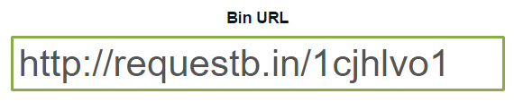
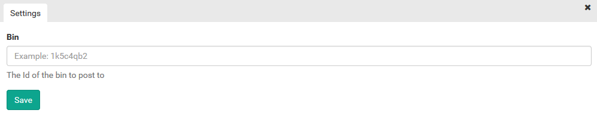
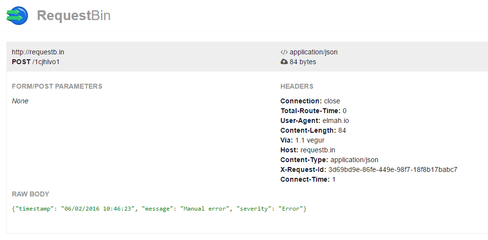

Creating Apps for elmah.io
Developing custom apps for elmah.io is possible through a bit of JSON and NuGet magic. This document show you how.
Apps on elmah.io are basically a nice wrapper around the Business Rule Engine on elmah.io. Using business rules, users can execute various actions based on Lucene queries against logged messages. Ignore messages based on a specific user agent, call the Slack API when fatal messages are logged are just a few examples on the possibilities using rules.
For this example we'll create a small app posting requests to RequestBin on every error. Probably not the most usable app, but serves the example well. RequestBin works by creating a bin, which you can then create HTTP requests against. Each bin contains a unique ID, which we will use in a second.
Creating manifest.json
To start creating the app, create a new file named manifest.json:
{
"variables": [{
"key": "bin",
"name": "Bin",
"description": "The Id of the bin to post to",
"example": "1k5c4qb2",
"type": "text",
"required": true
}],
"rule": {
"title": "Post a message to RequestBin on all messages",
"query": "severity: Error",
"then": {
"type": "http",
"url": "http://requestb.in/$bin",
"method": "post",
"contentType": "application/json",
"body": "{\"timestamp\": \"$time\", \"message\": \"$message\", \"severity\": \"$severity\"}"
}
}
}
The manifest consists of two blocks: variables and rule. Variables serves as input for generating the UI when users add the app to their log on elmah.io. In variables you can ask the user for information needed in order to execute the rule like username and password, access tokens or as in this example, an id of a bin on RequestBin.
For now, only text variables are available, but we may extend this with other types like bool, number etc.
The rule section tell elmah.io what this app should do. The two important fields to notice here is query and then. These terms match 1:1 to the same terms in the business rules. query should contain either a full-text query string or a Lucene query. Every message logged, matching this query, triggers the then part of this app. For the simple app, we query messages based on severity and userAgent. For a complete list of search fields, visit the Rules tab on your log settings.
In the then section we tell elmah.io what to do with messages matching the query. In this case, we want it to create a new HTTP request on http://requestb.in. Notice how the $bin variables from before is used as part of the URL. body contains examples on built-in variables like $message and $time. Built-in variables are documented on the Rules tab of the log settings as well.
A final note about then. In this example we use the "type": "http" to allow elmah.io to make HTTP requests. Types corresponding to other actions available in the rule engine are available as well. These are ignore, hide and email.
Creating a NuSpec
Apps for elmah.io are distributed as NuGet packages. There's a few requirements you will need to satisfy in order for your app to show up in the elmah.io UI.
Let's write a NuSpec for our app named elmah.io.apps.requestbin.nuspec:
<?xml version="1.0"?>
<package xmlns="http://schemas.microsoft.com/packaging/2010/07/nuspec.xsd">
<metadata>
<version>1.0.0</version>
<authors>elmah.io</authors>
<owners>elmah.io</owners>
<id>elmah.io.apps.requestbin</id>
<title>RequestBin Integration</title>
<requireLicenseAcceptance>false</requireLicenseAcceptance>
<description>Post a new HTTP request to RequestBin when messages are logged in elmah.io.</description>
<projectUrl>https://github.com/elmahio/elmah.io.apps.requestbin</projectUrl>
<iconUrl>https://secure.gravatar.com/avatar/5c4cb3646528821117abde6d2d5ee22d?s=32</iconUrl>
<tags>Error Exception Reporing Management Logging ELMAH Diagnostics Tracing RequestBin</tags>
</metadata>
<files>
<file src="manifest.json" target="manifest.json" />
</files>
</package>
The configuration is pretty simple. We include a single file (manifest.json) in the root of the package and name the package with elmah.io.apps. prefix. In fact this is a requirement for the package to work.
Building and Publishing the App
To build the app, we use nuget.exe:
c:\projects\elmah.io.apps.requestbin>nuget pack
Attempting to build package from 'elmah.io.apps.requestbin.nuspec'.
Successfully created package 'c:\projects\elmah.io.apps.requestbin\elmah.io.apps.requestbin.1.0.0.nupkg'.
To upload the package to NuGet, use nuget push:
c:\projects\elmah.io.apps.requestbin>nuget push elmah.io.apps.requestbin.1.0.0.nupkg MyApiKey
Pushing elmah.io.apps.requestbin 1.0.0 to the NuGet gallery (https://www.nuget.org)...
Your package was pushed.
(replace MyApiKey with your API Key located on nuget.org)
That's it folks. The app is now public and available in elmah.io.
Testing the Package
To test that everything is working, we'll start by creating a new bin on RequestBin. Go to http://requestb.in/ and click the Create a RequestBin button:

In this case, the bin ID is 1chhlvo1.
Log into elmah.io and go to the Apps tab on the log settings. The RequestBin app is available from the list of apps in the bottom. Click the Install button:

Observe how the bin variable from manifest.json shows up in the log settings with the description and example as we specified.
Input the bin ID and click the Save button.
To test that everything is working, you can use elmah.io's API to publish a new message to your log, which should match the query specified in manifest.json:
curl -H "Content-Type: application/json" -X POST -d '{"title": "Manual error", "severity": "Error"}' https://elmah.io/api/v2/messages?logId=MyLogId
(replace MyLogId with your log ID)
Refresh the bin at RequestBin and observe the HTTP request performed by the app:

Isn't that just the most awesome thing you have seen all day? The JSON format specified in manifest.json now ends up on RequestBin using a homebrewed elmah.io app.
To see more examples of elmah.io apps, check out elmah.io.apps.slack, elmah.io.apps.hipchat and elmah.io.apps.github all available on GitHub. For even more information, get in contact. We are always happy to help, even if you're just playing around with app development for the fun of it.